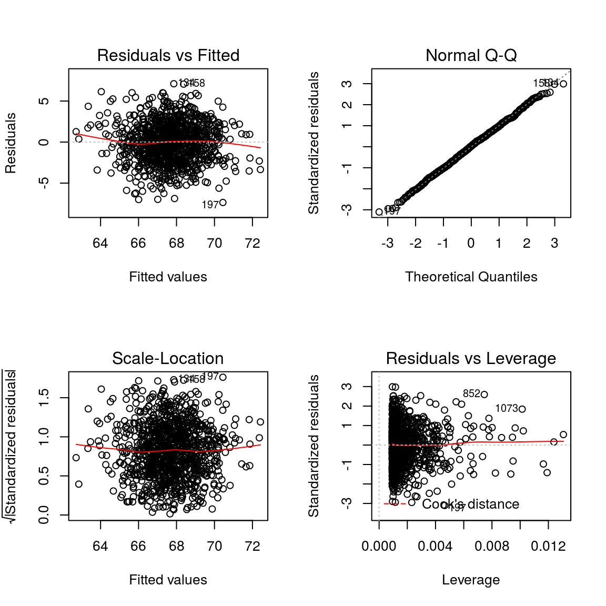
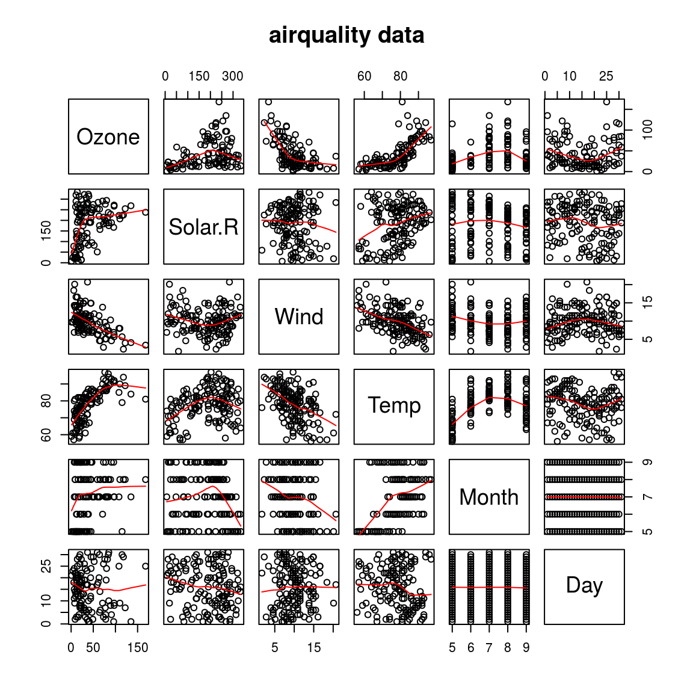

9 Multiple linear regression
9.1
Descriptions of the data: https://stat.ethz.ch/R-manual/R-patched/library/datasets/html/airquality.html
Daily air quality measurements in New York, May to September 1973.
data("airquality")
names(airquality)## [1] "Ozone" "Solar.R" "Wind" "Temp" "Month" "Day"require(graphics)
pairs(airquality, panel = panel.smooth, main = "airquality data")
A formula of the form y ~ x | a indicates that plots of y versus x should be produced conditional on the variable a. A formula of the form y ~ x| a * b indicates that plots of y versus x should be produced conditional on the two variables a and b
coplot(Ozone~Solar.R|Wind, panel = panel.smooth, airquality)
##
## Missing rows: 5, 6, 10, 11, 25, 26, 27, 32, 33, 34, 35, 36, 37, 39, 42, 43, 45, 46, 52, 53, 54, 55, 56, 57, 58, 59, 60, 61, 65, 72, 75, 83, 84, 96, 97, 98, 102, 103, 107, 115, 119, 150model2 = lm(Ozone~Solar.R*Wind, airquality)par(mfrow=c(2,2)) # Change the panel layout to 2 x 2
plot(model2)par(mfrow=c(1,1)) # Change back to 1 x 1- Residuals vs Fitted
This plot shows if residuals have non-linear patterns. There could be a non-linear relationship between predictor variables and an outcome variable and the pattern could show up in this plot if the model doesn’t capture the non-linear relationship. If you find equally spread residuals around a horizontal line without distinct patterns, that is a good indication you don’t have non-linear relationships.
- Normal Q-Q
This plot shows if residuals are normally distributed. Do residuals follow a straight line well or do they deviate severely? It’s good if residuals are lined well on the straight dashed line.
- Scale-Location
It’s also called Spread-Location plot. This plot shows if residuals are spread equally along the ranges of predictors. This is how you can check the assumption of equal variance (homoscedasticity). It’s good if you see a horizontal line with equally (randomly) spread points.
- Residuals vs Leverage
This plot helps us to find influential cases (i.e., subjects) if any. Not all outliers are influential in linear regression analysis (whatever outliers mean). Even though data have extreme values, they might not be influential to determine a regression line. That means, the results wouldn’t be much different if we either include or exclude them from analysis. They follow the trend in the majority of cases and they don’t really matter; they are not influential. On the other hand, some cases could be very influential even if they look to be within a reasonable range of the values. They could be extreme cases against a regression line and can alter the results if we exclude them from analysis. Another way to put it is that they don’t get along with the trend in the majority of the cases.
Unlike the other plots, this time patterns are not relevant. We watch out for outlying values at the upper right corner or at the lower right corner. Those spots are the places where cases can be influential against a regression line. Look for cases outside of a dashed line, Cook’s distance. When cases are outside of the Cook’s distance (meaning they have high Cook’s distance scores), the cases are influential to the regression results. The regression results will be altered if we exclude those cases.
#install.packages("UsingR")
suppressWarnings(suppressMessages(library(UsingR)))
data(father.son)
names(father.son)## [1] "fheight" "sheight"model_fs = lm(fheight~sheight, father.son)par(mfrow=c(2,2)) # Change the panel layout to 2 x 2
plot(model_fs)
9.2
summary(model2)##
## Call:
## lm(formula = Ozone ~ Solar.R * Wind, data = airquality)
##
## Residuals:
## Min 1Q Median 3Q Max
## -48.694 -17.200 -4.384 12.740 78.218
##
## Coefficients:
## Estimate Std. Error t value Pr(>|t|)
## (Intercept) 34.467686 17.634602 1.955 0.053246 .
## Solar.R 0.324141 0.083928 3.862 0.000193 ***
## Wind -1.594546 1.508979 -1.057 0.293026
## Solar.R:Wind -0.020279 0.007246 -2.799 0.006089 **
## ---
## Signif. codes: 0 '***' 0.001 '**' 0.01 '*' 0.05 '.' 0.1 ' ' 1
##
## Residual standard error: 24.16 on 107 degrees of freedom
## (42 observations deleted due to missingness)
## Multiple R-squared: 0.487, Adjusted R-squared: 0.4727
## F-statistic: 33.86 on 3 and 107 DF, p-value: 1.807e-15par(mfrow=c(1,2)) # Change back to 1 x 1
termplot(model2, partial.resid=TRUE, col.res = "royalblue")## Warning in termplot(model2, partial.resid = TRUE, col.res = "royalblue"):
## 'model' appears to involve interactions: see the help page
summary(airquality$Solar.R)## Min. 1st Qu. Median Mean 3rd Qu. Max. NA's
## 7.0 115.8 205.0 185.9 258.8 334.0 7summary(airquality$Wind)## Min. 1st Qu. Median Mean 3rd Qu. Max.
## 1.700 7.400 9.700 9.958 11.500 20.700Solar1 = mean(airquality$Solar.R, na.rm=T)
Solar2 = 100
Solar3 = 300
p1 = predict(model2, data.frame(Solar.R=Solar1, Wind=1:20))
p2 = predict(model2, data.frame(Solar.R=Solar2, Wind=1:20))
p3 = predict(model2, data.frame(Solar.R=Solar3, Wind=1:20))p1## 1 2 3 4 5 6
## 89.370627 84.005541 78.640456 73.275370 67.910285 62.545199
## 7 8 9 10 11 12
## 57.180113 51.815028 46.449942 41.084856 35.719771 30.354685
## 13 14 15 16 17 18
## 24.989600 19.624514 14.259428 8.894343 3.529257 -1.835829
## 19 20
## -7.200914 -12.566000plot(Ozone~Wind, airquality, col="grey")
lines(p1, col="red")
lines(p2, col="blue")
lines(p3, col="darkgreen")